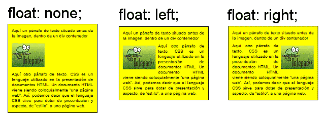
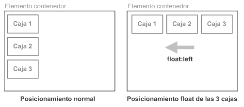

Resumen de CSS
En esta práctica se verá y aprenderá los conceptos fundamentales de un diseño webb que se basan en CSS y
una estructura visuual y práctica para una página web con estilos de hojas de control de cascada. Además
se verá la función de un archivo CSS y como añadirlos a las páginas web. La mayoría de los programadores
y diseñadores se preparan sus hojas de estilos reset para resolver objetivos y necesidades, se debe
disponer de una serie de reglas coherentes que se utilizan para emplear cualquier sitio web, proyecto o
trabajo en absoluto.
Al crear una página web, se utiliza en primer lugar el lenguaje HTML/XHTML para marcar los contenidos, es
decir, para designar la función de cada elemento dentro de la página: párrafo, titular, texto destacado,
tabla, lista de elementos, etc.
Una vez creados los contenidos, se utiliza el lenguaje CSS para definir el aspecto de cada elemento:
color, tamaño y tipo de letra del texto, separación horizontal y vertical entre elementos, posición de
cada elemento dentro de la página, etc.
La historia de CSS es que las hojas de estilos aparecieron poco después que el lenguaje de etiquetas
SGML, en el año 1970. Desde que se creo el SGML, se observó la necesidad de definir un mecanismo que
permitiera aplicar de forma consistente diferentes estilos a los documentos electrónicos. Su gran
impulso de estos lenguajes se ha producido con el boom de Internet y con el crecimiento exponencial en
el HTML para la creación de documentos electrónicos.
El organismo World Wide Web Consortium, que se encarga de crear todos los estándares relacionados con la
web, propuso la creación de un lenguaje de hojas de estilos específico para el lenguaje HTML y se
presentaron 9 propuestas. Las dos propuestas que se tuvieron en cuenta fueron la CHSS (Cascading HTML
Style Sheets) y la SSP (Stream-based Style Sheet Proposal). La propuesta CHSS fue realizada por Håkon
Wium Lie y SSP fue propuesto por Bert Bos. Entre finales de 1994 y 1995 Lie y Bos se unieron para
definir un nuevo lenguaje que tomaba lo mejor de cada propuesta y fue llamado CSS y en 1995 el W3C ha
decidido apostar por el desarrollo y estandarización de CSS y lo añadió a su grupo de trabajo de HTML. A
fines de 1996, el organismo publicó la primera recomendación oficial, conocida como "CSS nivel 1".
La versión de CSS que utilizan todos los navegadores de hoy en día es CSS 2.1, una revisión de CSS 2 que
aún se está elaborando (la última actualización es del 8 de septiembre de 2009). Al mismo tiempo, la
siguiente recomendación de CSS, conocida como "CSS nivel 3", continúa en desarrollo desde 1998 y hasta
el momento sólo se han publicado borradores. El primer navegador con soporte completo de CSS 1 fue la
versión para Mac de Internet Explorer 5, que se publicó en el año 2000. Por el momento, ningún navegador
tiene soporte completo de CSS 2.1.


Caracteristicas:
- La complementariedad con documentos estructurados e independencia del vendedor, plataforma y
dispositivo.
- Complementan a otros documentos proporcionando información de estilo con poco o ningún impacto sobre
el sistema de marcas.
- XML permite construir elementos propios que las aplicaciones de usuario no saben cómo mostrar.
- La independencia del vendedor, la plataforma y dispositvo manteniendo sus documentos.
- Los responsables de sitios en la Web pueden simplificar el mantenimiento y conservar un estilo y un
efecto consistente a todo lo largo del sitio.
- El modo de funcionamiento de los estilos consiste en definir, mediante una sintaxis especial, la forma
de presentación que le aplicaremos a los elementos de la página.
- Un web entero es el único lugar el estilo de toda una web, de una sola vez.
- Una porción del documento, aplicando estilos visibles en un trozo de la página, como podría ser la
cabecera.
- Podemos definir la distancia entre líneas del documento.
- Se puede aplicar un sangrado a las primeras líneas del párrafo y colocar elememtos en el sitio con
mucha precisión y sin errores.
GLOSARIO
Aqui se mostrará un esquema básico de todos los elementos que lo forman

Y esto se define de la siguiente manera:
Regla: Cada uno de los estilos que se compone de la hoja de estilos, la cual se compone de
una parte de "selectores", un símbolo de "llave de apertura" ({), la otra parte denominada "declaración"
y por último, el simbolo de "llave de cierre" (})
Selector: Indica el elemento o elementos HTML a los que se aplica la regla CSS, por ejemplo
los párrafos, divisiones, imagenes y tablas.
Declaración: Especifica los estilos que se aplican a los elementos y está compuesta por una
o más propiedades, como el color que tendrá un párrafo, el tamaño de letra y la superficie de los
bordes.
Propiedad: Característica que modifica en el elemento seleccionado, como el color de letra,
color de fondo y tamaño de tabla.
Valor: Se establece el nuevo valor de la característica modificada en el texto.
CSS en HTML
El siguiente código se muestra como debe servir que un archivo HTML se conecte al CSS, para agregar los
estilos, diseños y modificaciones.
UNIDADES DE MEDIDA Y COLORES
Muchas de las propiedades de CSS que se ven en los próximos capítulos permiten indicar medidas y colores
en sus valores. Además, CSS es tan flexible que permite indicar las medidas y colores de muchas formas
diferentes.
Unidades de medida: Estas medidas se definen la altura, anchura de los elementos y
establecen el tamaño del valor, todas las medidas se indican con valor numérico entero o decimal de una
unidad de medida.
Unidades absolutas: Una medida indicada mediante unidades absolutas está completamente
definida, ya que su valor no depende de otro valor de referencia. A continuación se muestran ejemplos de
utilización:
Unidades relativas: En diferencia de las absolutas, no están completamente definidas, ya
que su valor siempre está referenciado respecto a otro valor. A pesar de su aparente dificultad, son las
más utilizadas en el diseño web por la flexibilidad con la que se adaptan a los diferentes medios.
A continuación se muestra 2 de sus ejemplos:
Colores: Los colores en CSS se pueden indicar de cinco formas diferentes: palabras clave,
colores del sistema, RGB hexadecimal, RGB numérico y RGB porcentual. Aunque el método más habitual es el
del RGB hexadecimal, a continuación se muestran todas las alternativas que ofrece CSS.
Palabras clave: CSS define palabras clave para referirse a todos los colores que existen
realmente. Las palabras se corresponden con el nombre en inglés de cada color y las claves contienen el
simbolo del gato (#) y 6 digitos que pueden ser letras y/o números.
Breve historia de las técnicas de presentación en pantalla para la Web
Se puede crear un diseño visual de página utilizando estilos CSS, debes saber que esto no ha sido siempre
la técnica normal. Cuando se empezó con el diseño web a mediados de los 90, el único método que se podía
emplear para crear estructuras visuales complejas, como por ejemplo la presentación en varias columnas,
consistía en emplear el elemento tabla (table).
Sin embargo los diseñadores empezaron a utilizar este elemento como base para las estructuras visuales
de las páginas. En aquel momento esa técnica estaba plenamente justificada: las tablas era lo único que
tenían para generar el tipo de diseños que se necesitaban y, además, eran un recurso extremadamente
flexible.
CSS ha sustituido ya el empleo de tablas para organizar las páginas, por lo que los elementos de tabla de
HTML van regresando, poco a poco, a su función original, que es la de mostrar datos estructurados, y
abandonan su papel como armazón visual de las páginas.
Introducción a las distintas opciones de presentación de páginas
Antes de la estructura visual de nuestras páginas web tenemos que decidir unas cuantas cosas. Lo primero
es qué anchura va a tener. Hay dos categorías principales de estructuras en base a su anchura: las de
anchura fija, anchura flexible y las de ancho variable.
Anchura fija:Es la solución más cómoda para diseñar ya que nos permite ubicar con precisión
todos los elementos. Aporta un esqueleto robusto para otros elementos, como la anchura de párrafo o el
posicionamiento de imágenes cuando éstas aparecen en gran número como catálogos.
Anchura flexible: Se llaman así porque están pensadas para adaptarse a la anchura de la
ventana del navegador en cualquier momento. Este tipo de disposiciones es útil cuando los usuarios
acceden desde pantallas con resoluciones muy variadas, lo que hace imposible elegir un ancho fijo que
ofrezca el mismo aspecto en todas ellas. Es bien diseñada y es capaz de ajustarse automáticamente al
tamaño de ventana del navegador. Son muy adecuadas para sitios web porque permiten el reposicionamiento
en pantalla de textos e imágenes. Puesto que los dispositivos móviles suponen actualmente una proporción
importante de los navegadores en uso en el mercado.
Ancho variable:Son más difíciles de diseñar y obligan al creador a resolver una serie de
asuntos adicionales. Por ello, en esta lección vamos a empezar por crear una estructura de anchura fija.
La propiedad float CSS
Hace posible que un texto pueda escribirse alrededor de una imagen. CSS consigue el mismo efecto haciendo
que los elementos que siguen a un elemento “flotante” puedan rodearlo, cambiando su posición relativa
con respecto a él. Este comportamiento también nos sirve para crear columnas en una página.
El valor float se puede también declarar como “left”. Si queremos tener múltiples elementos flotantes
dentro del mismo contenedor, el resultado es que se alinean entre sí. Este comportamiento se suele
utilizar en ciertas funciones habituales de las páginas web, como por ejemplo los menús horizontales o
las galerías de imágenes.

Creación de columnas con la propiedad float
1 Añade el siguiente selector y las reglas de estilo debajo de la regla #mainnav:

Guarda la página y muéstrala en el navegador. La página aparece “rota”. Ahora vas a ver qué es lo que
causa que la página salga “rota” como en este caso, ya que este efecto enseña cómo funciona la propiedad
float.
Aunque la página parece rota, los divs están realmente funcionando tal y como debe ser: cuando
convertimos en flotante un elemento (en este caso el div sidebar), queda eliminado del flujo normal del
HTML. Es por eso que la barra lateral se extiende por todo el contenedor.
2 Añade este selector y las reglas de estilo debajo de la regla #sidebar:

3 Guarda el archivo y vuelve a mostrar la página en el navegador.
El div “main” flota hacia la izquierda, pero el “footer” sube a la parte superior siguiendo el curso o
“flujo” de restitución de la página.
Al hacer flotar este div hacia la izquierda hemos resuelto el problema de que parte de su contenido
apareciera debajo de sidebar; a pesar de que por la cantidad de contenido que tiene el div main parte de
él se sale del propio contenedor.
La propiedad clear
Cuando añadimos la propiedad CSS clear a un objeto, le estamos indicando una regla que dice “no admito
elementos flotantes a mi lado”.
1 Añade este nuevo selector y sus reglas debajo de las reglas de #main:

2Guarda el archivo y visualízalo en el navegador. Ahora el pie de página queda en la parte inferior del
div main. Lo que hace la regla clear:left es impedir la presencia de elementos flotantes a su izquierda.
El div main es flotante, por lo que el pie se mueve a la siguiente posición disponible. Cierra el
navegador y vuelve al editor.
3 Cambia el valor de la propiedad clear así:

4 Guarda el archivo y vuelve a mostrarlo en el navegador. Verás que no cambia con respecto al paso 3 pero
el pie de página ahora está mejor preparado para cambios futuros en el contenido.
Creación de un menú de navegación basado en listas con “float”
Los elementos de la lista dentro de este menú tendrán que ser flotantes para modificar la presentación
vertical por defecto de las listas. Los menús de navegación CSS se utilizan mucho en el diseño basado en
estándares porque se pueden actualizar y modificar de manera mu sencilla, y porque se basan en textos (
y no en imágenes), lo que mejora la accesibilidad en dispositivos como los lectores de pantalla.
1 Desde el editor de textos, busca el div mainnav y añádele la siguiente lista no ordenada y estas
líneas:
2 Guarda el archivo y visualízalo en el navegador.
nuestra página está asociada a una hoja de estilo CSS de reset y una de sus reglas declara la propiedad
list-style:none, que elimina los puntos indicadores en las listas. En el caso de este ejemplo, la falta
de puntos es deseable, ya que vamos a utilizar la lista como menú de navegación.
3 Vuelve al editor y localiza la regla #mainnav. Añade una nueva regla entre ésta y la regla de la barra
lateral pulsando Intro unas cuantas veces e insertando el código siguiente:
Fíjate que en este paso estamos creando una nueva regla justo después de #mainnav. Aunque podríamos haber
insertado la regla al final de la hoja de estilos, las buenas prácticas recomiendan que se pongan juntas
las reglas que tienen relación entre sí para que el código esté más organizado y sea más fácil de
mantener.
4 Guarda la página y visualízala en el navegador. Todos los elementos aparecen ahora colocados en
horizontal. Los enlaces casi no se ven porque hay muy poco contraste entre el enlace que se escribe en
color azul oscuro y el gris oscuro del fondo de la sección “mainnav”.
5 Vuelve al editor y añade este código a la regla #mainnav li:
En este código hemos hecho estos cambios: hemos definido el recuadro alrededor de cada elemento de la
lista con una anchura de 170 pixels y una altura de 40 pixels.
6 Debajo de la declaración de border-right, añade esta línea de código:
7 Guarda el archivo y muéstralo en el navegador, El texto aparece ahora centrado dentro del recuadro.
Conviene notar que podemos tener problemas si en un futuro cambiásemos el texto de los elementos de la
navegación, ya que tanto el valor de “line-height” como el tamaño del propio contenedor se basan en el
tamaño de la fuente.
Efecto de los márgenes internos y externos en una estructura de anchura fija
Vamos a ver ahora algunas estrategias para controlar la estructura visual de la página.
Ahora vamos a añadir un margen interior (“padding”) al elemento sidebar.
1.-En el editor de texto, abre el archivo 03_layoutwork.html y visualiza la pantalla en el navegador.
Verás que el texto de la barra lateral está pegado al borde, vamos a separarlo
Podemos separar el texto del borde izquierdo de dos manera: la primera consiste en utilizar el valor de
margen interior o “padding” del contenedor y la segunda, utilizar el margen externo de los objetos
contenidos.
2.-Vuelve al editor, localiza la regla para el “sidebar” en el código CSS y añade esta línea:
El primer valor (0px) es la separación o margen interior con respecto al borde superior. El segundo valor
(20px) corresponde a la separación con respecto al margen derecho. El tercero (0px) es la separación con
respecto al borde inferior y el ultimo (20px) es el margen interior de separación aplicable al borde
izquierdo.
Al añadir 20 pixels de espacio interior a la derecha e izquierda del div sidebar, aumentamos en 40 pixels
la anchura de la columna.
3.- Hay que volver al css y añade una cantidad de margen interno al div main porque también necesitamos
separa el texto del borde en esa parte de la página.

Podemos ver que el div main se ha desplazado hasta el único sitio donde puede desplegarse por completo,
que es debajo de sidebar.
Podemos resolver esto de varias formas: podemos aumentar la anchura total del div wrap, podemos reducir
el ancho de sidebar o de main (o ambos), o también podemos reducir el valor del margen interno.
4.-Vuelve al editor y localiza las reglas de margen interno y elimínalas. Vamos a conseguir un efecto
equivalente
5.-Debajo de la regla #footer del código CSS, añade esta regla nueva:
Esta regla añade un margen de 20 pixels a la derecha y la izquierda de todos los párrafos y títulos de la
página.
Esta técnica también tiene sus desventajas, puesto que las reglas que acabamos de crear se van a aplicar
a todos los párrafos y títulos de nivel 1, 2 y 3 de la página.
6.-Vuelve al editor y borra las reglas para margin-left y margin-right que has añadido en el paso 5 (pero
deja la regla tal cual). Y agrega este grupo de reglas:
A todos estos elementos se les aplicarán márgenes de 20 pixels a la derecha y la izquierda, lo que
equivale a restarles un total de 40 pixels de anchura para su despliegue en pantalla.
7.-Prácticamente no veremos cambios excepto en el pie de página, que queda de nuevo totalmente pegado al
lado izquierdo.
8.-Añade una nueva regla justo debajo de la regla anterior
9.-Ahora tienen un margen a la izquierda de 30 pixels, y en contraste con el resto de los elementos,
aparecen indentados:

10.-Regresas y modifica la regla vacía y modifica el #sidebar h2
Ahora el título h2 de la barra lateral queda más separado del borde superior del contenedor. Resultado:
Aplicar una imagen de fondo al pie de página
Hasta ahora nuestra estructura de página muestra los colores de fondo que hemos declarado a los elementos
div. En esta práctica vas a aprender a insertar imágenes. Para ello empezaremos por añadir una imagen de
fondo al pie de página mediante CSS.
1.- Localiza el div #footer y sustituye todo el contenido de texto que hay dentro por este que aparece
aquí :
2.-Guarda la página y ábrela en el navegador. A cada uno de los párrafos se le aplican las reglas de
párrafo descritas en la hoja de estilos. Ahora vamos a añadirle una imagen de fondo a todo el contenedor
div. Es una imagen de 960 pixels de ancho y 128 de alto.
3.- En la hoja de estilos interna, encuentra la regla para el pie de página (“#footer”). Añade una nueva
regla para aplicar una imagen de fondo indicando un archivo de la carpeta de imágenes de tu equipo:
Guarda la página y vuelve a mostrarla en el navegador.
El pie de página tiene ahora una imagen de fondo por aplicación de una nueva regla CSS.
La imagen de fondo ahora aparece detrás de los textos. Fíjate en la propiedad background-repeat del
código anterior. CSS, por defecto, considera a las imágenes de fondo como “baldosas” que se van
añadiendo sin límite hasta llenar todo el espacio del objeto al que pertenecen. Al indicar el valor
no-repeat nos aseguramos que la imagen solo se muestra una vez. Las dimensiones del pie de página deben
ser tales que nos permitan ver la imagen correctamente, tal y como veremos en el paso siguiente.
4.-Modifica la regla para el pie de página añadiendo las líneas en rojo:
Guarda el archivo y vuelve a mostrar la página en el navegador. Ahora el tamaño de la zona de pie de
página coincide con el tamaño de la foto. El paso siguiente consiste en ajustar los estilos del texto
que va dentro, separándolos.
5.-En el editor de texto, encuentra la regla #footer y justo debajo añade esta otra regla para párrafos,
que se aplicará únicamente a los párrafos del footer:
Esta regla añade un margen superior de 10 pixels y margen izquierdo de 20 pixels a ambos párrafos del
pie. Al definir la anchura de los párrafos podemos forzar un salto de línea en el punto aproximado que
nos interesa: dentro del espacio en blanco que nos deja la foto. Las propiedades “font-family” y
“font-size” nos ayudarán a conseguir un efecto más atractivo con un tipo de letra más pequeño.
6.-Guarda la página y visualízala en el navegador.
Los párrafos de texto del pie de página con los nuevos estilos.
En la sección anterior hemos visto cómo se utilizan los márgenes internos y externos, es una técnica muy
habitual. Podríamos haber añadido algo más de espacio entre el primer párrafo y el borde superior del
pie de página, pero al aumentar el margen superior en la regla #footer p estamos añadiendo espacio
también al segundo párrafo. En este caso, lo conveniente es añadir margen interior al div “footer” tal y
como se indica en el paso siguiente.
7.-Añade la declaración que aparece en rojo a la regla #footer:
Ajuste fino de la estructura visual de la página
Podemos aplicar colores de fondo y/o bordes a los elementos principales de nuestra estructura en las
primeras fases del diseño, lo que nos ayudará a ver mejor sus límites. Después, si no queremos
conservarlos, podemos eliminarlos y la estructura seguirá funcionando sin problemas. Ahora vamos a
eliminar los colores de fondo de los divs del centro de la página, añadiremos algunas imágenes de fondo
y mejoraremos algo el estilo de nuestra barra de navegación.
1.- Elimina toda la propiedad background-color en las siguientes 4 reglas de estilo: #wrap, #sidebar,
#main y #footer. Guarda el archivo y visualízalo en el navegador.

Los mismos elementos estructurales una vez eliminados los colores de fondo.
2.-Aunque nos vamos aproximando a un diseño de página unificado, aún tenemos que hacer unas cuantas cosas
más. Vamos a empezar por poner un fondo de gradiente de color a la barra lateral. La mejor forma de
hacerlo es mediante la inserción de una imagen de fondo.
Vuelve al editor y añade estas declaraciones a la regla #sidebar:
Como hicimos en la práctica anterior con el pie de página, ahora estamos añadiendo una imagen de fondo
desde CSS a este elemento div. pero en este caso el valor de background-repeat ahora es “repeat-x”. Esto
provoca que la imagen se repita en sentido horizontal (el eje X).
3.-Añade también esta otra declaración para aplicarla al borde Izquierdo de la barra. Nos va a ayudar a
delimitar mejor la separación con respecto al contenido del área principal (“main”).
Guarda el archivo y muéstralo en el navegador
.
La barra lateral tiene ahora un gradiente de color como imagen de fondo y un borde en el lado
izquierdo.
4.- Otro problema de nuestra estructura es el logo dentro de la cabecera. En este momento está anidado y
se presenta en pantalla pegado al borde del contenedor. Podemos separarlo un poco creando una regla
específica para imágenes dentro del div “masthead”. Encuentra la regla #masthead y añádele esta línea
justo debajo.
Se trata de un selector contextual igual que otros que hemos ido añadiendo a los títulos y párrafos
dentro de las columnas “main” y “sidebar”. En este caso, se trata de una declaración para añadirle
margen por la izquierda a todas las imágenes que puedan aparecer en el div “masthead”.
Lo último que nos quedaría por hacer es mejorar la apariencia de la barra de navegación. En este momento
estamos empleando unos estilos muy rudimentarios. Ahora los vamos a mejorar para ponerla a la altura del
resto de nuestra página y además le vamos a añadir algo de interactividad.
5.-Para mejorar la presencia visual de los enlaces dentro de la sección “mainnav” vamos a añadir una
regla explícita para los enlaces. Encuentra la regla #mainnav li y añade la siguiente regla justo debajo
de ella:
La declaración text-decoration elimina el subrayado del vínculo y le cambia el color a blanco. La
declaración display:block hace que estos elementos de navegación llenen por complete todo el espacio de
la barra de navegación. Entenderás mejor qué significa esto cuando creemos un efecto dinámico que se
activará al pasar el ratón por encima, en el paso siguiente.
Guarda el archivo y visualízalo de nuevo en el navegador.
La barra de navegación con enlaces, después de eliminar el subrayado
6.-Cuando el usuario pasa el cursor por encima de los enlaces, sería interesante que cambiasen su
apariencia, así sabe que se trata de vínculos y no de texto normal. Para ello podemos aprovechar una
particularidad de los estilos que solo tienen los vínculos. Justo debajo de la regla #mainnav ul li a ,
añade esta otra:
Los enlaces poseen una categoría exclusiva llamada pseudoclases. Hay cuatro estilos asociados a los
vínculos, que son a:link, a:visited, a:hover y a:active. No es obligatorio aplicar estilos a los cuatro,
por ejemplo aquí hemos creado estilos para a:hover que modifican el aspecto de todos los enlaces de la
barra de navegación cuando tienen encima el cursor. La pseudoclase a:visited se aplica al vinculo
después de que el usuario ha pulsado sobre él, y la pseudoclase a:active modifica su aspecto cuando le
estamos pulsando con el botón.
7.-Guarda el archivo y muéstralo en el navegador. Pasa el cursor por encima de los enlaces para ver los
cambios. Es el resultado del estilo a:hover.
Al pasar el ratón sobre los enlaces de la barra de navegación se dispara el estilo a:hover.
Ya has completado las prácticas de esta lección. Hemos visto la diferencia entre las estructuras basadas
en tablas y en CSS. Además has aprendido el uso de las propiedades float y clear para crear columnas
dentro de la página. También hemos visto las ventajas y desventajas del uso de márgenes externos
(“margin”) e internos (“padding”) a la hora de definir el aspecto de los objetos dentro de los
contenedores.
EL diseño de estructuras visuales de las páginas web es un tema muchísimo más amplio, si tienes
interés en conocer más a fondo las técnicas avanzadas para diseño de páginas Web, te recomiendo
que leas el libro "HTML5 Digital Classroom" y más concretamente, el capítulo “Lección 5: Diseño
avanzado con CSS”.
Preguntas
¿Que es un CSS?
CSS significa “Cascading Style Sheets” y es lo que le describe a HTML como los elementos deben de ser
mostrados.
¿Para qué sirve un CSS?
CSS es lo que hace que una pagina se vea bien a la vista, este elemento nos ahorra mucho tiempo ya que
puede cambar y controlar la apariencia de varias páginas a la vez.
¿Cual es la diferencia que seria mas difícil de realizar en un sitio web si se optara por no usar un
CSS?
Lo más difícil seria darle una apariencia a la pagina web, puesto que solo se vería el texto, aun
teniendo animaciones realizadas en JavaScript, no podríamos completar el look de una página web.